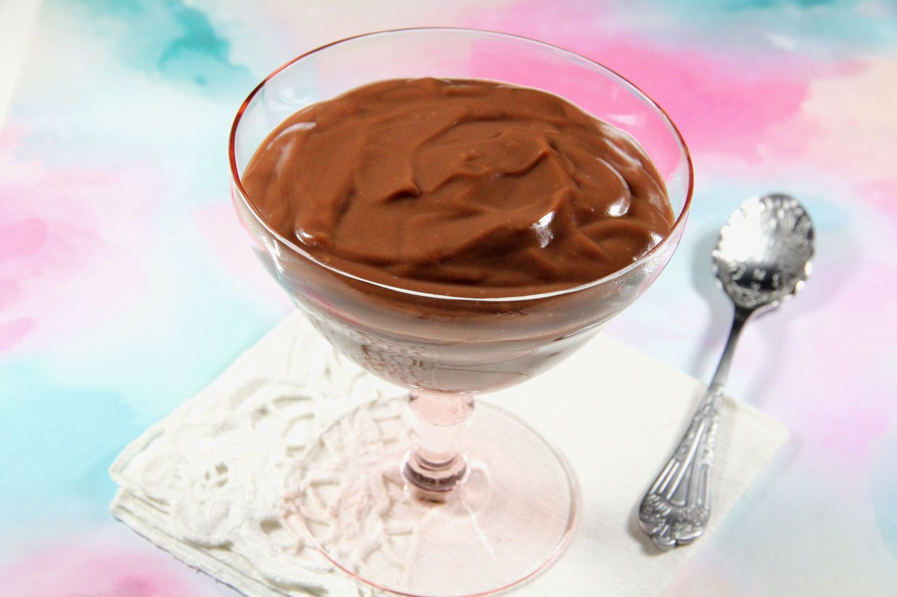

Chocolate Pudding
Back to home page

Description
This chocolate pudding is very simple and easy to make.
This recipe should give you a total of 4 servings.
Ingredients
- 105 g (1/2 cup) sugar
- 35 g (1/4 cup) cornstarch
- 500 ml (2 cups) milk
- 115 g (4 oz) dark chocolate, chopped
Preparation
- In a small saucepan off the heat, whisk together the sugar and starch.
- Add the milk and mix well. Bring to a boil over medium heat, stirring continuously and scraping the bottom and sides of the pan until the mixture thickens.
- Add the chocolate and stir until melted. Remove from fire.
- Pass the pudding through a sieve to remove any lumps, if necessary.
- Pour the pudding into a bowl. Cover the surface of the pudding directly with plastic wrap. Let cool, then refrigerate for 6 hours or until pudding is firm and completely cooled.
- When serving the pudding, mix it with a spatula to restore its suppleness.
- Enjoy!